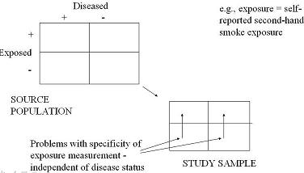
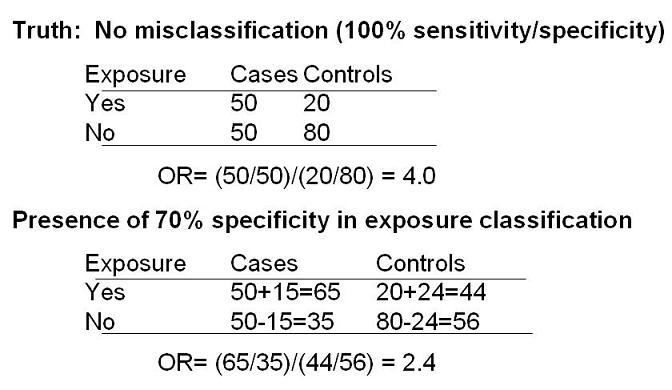

Example of Misclassification Bias
Non-Differential Exposure - Imperfect Specificity
Lead Author(s): Jeff Martin, MD
Measurement bias results from imperfect specificity of the exposure variable.
Imperfect Specificity

In the diagram above the source population is on the top left and our study sample is on the bottom right.
- We use our study sample to make inferences about the source population.
Study - Second Hand Cigarette Smoke
The above schematic representation of misclassification of exposure when we have imperfect specificity.
- Let’s say we are doing a case-control study where our exposure is self report of second hand cigarette smoke and where it is possible that some people may over report their exposure.
Persons who are truly unexposed but who are classified as exposed (because of faulty self-report) are reflected in both arrows.
- This is a problem of specificity.
This is happening to the same degree in the diseased individuals as it is in the non-diseased individuals.
- The arrows are evenly shaded and are meant to depict that misclassification is occurring to the same degree in the diseased and non-diseased persons.
Non-Differential Misclassification of Exposure
- If the degree of misclassification of exposure is equivalent in the diseased vs non-diseased groups -i.e. independent of disease-, this again is known as non-differential misclassification of exposure.
Imperfect Specificity - Bias the OR towards the Null Hypothesis

Here is what non-differential misclassification of exposure because of problems of specificity would look like numerically.
What happens in the presence of 70% specificity in exposure classification?
- That means that 30% of truly unexposed cases or 15 of 50 are instead classified as exposed.
- Also, 30% of the 80 unexposed controls are falsely classified as exposed, or 24 persons.
- The bottom panel therefore shows what happens and you can see that the OR is now attenuated to 2.4.
Bias Towards the Null Hypothesis
This illustrates the effect of non-differential misclassification of exposure because of imperfect specificity in the presence of 2 exposure categories -